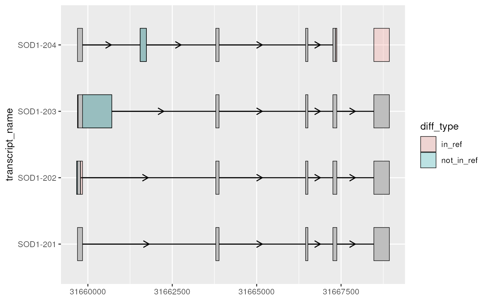

to_diff() obtains the difference between exons from a set of transcripts
to a reference transcript (ref_exons). This can be useful when visualizing
the differences between transcript structure. to_diff() expects two sets of
input exons; 1. exons - exons from any number of transcripts that will be
compared to ref_exons and 2. ref_exons - exons from a single transcript
which acts as the reference to compare against.
Arguments
- exons
data.frame()contains exons which can originate from multiple transcripts differentiated bygroup_var.- ref_exons
data.frame()contains exons that originate from a single transcript, whichexonswill be compared against.- group_var
character()if input data originates from more than 1 transcript,group_varmust specify the column that differentiates transcripts (e.g. "transcript_id").
Value
data.frame() details the differences between exons and
ref_exons.
Examples
library(magrittr)
library(ggplot2)
# to illustrate the package's functionality
# ggtranscript includes example transcript annotation
sod1_annotation %>% head()
#> # A tibble: 6 × 8
#> seqnames start end strand type gene_name transcript_name
#> <fct> <int> <int> <fct> <fct> <chr> <chr>
#> 1 21 31659666 31668931 + gene SOD1 NA
#> 2 21 31659666 31668931 + transcript SOD1 SOD1-202
#> 3 21 31659666 31659784 + exon SOD1 SOD1-202
#> 4 21 31659770 31659784 + CDS SOD1 SOD1-202
#> 5 21 31659770 31659772 + start_codon SOD1 SOD1-202
#> 6 21 31663790 31663886 + exon SOD1 SOD1-202
#> # ℹ 1 more variable: transcript_biotype <chr>
# extract exons
sod1_exons <- sod1_annotation %>% dplyr::filter(type == "exon")
sod1_exons %>% head()
#> # A tibble: 6 × 8
#> seqnames start end strand type gene_name transcript_name
#> <fct> <int> <int> <fct> <fct> <chr> <chr>
#> 1 21 31659666 31659784 + exon SOD1 SOD1-202
#> 2 21 31663790 31663886 + exon SOD1 SOD1-202
#> 3 21 31666449 31666518 + exon SOD1 SOD1-202
#> 4 21 31667258 31667375 + exon SOD1 SOD1-202
#> 5 21 31668471 31668931 + exon SOD1 SOD1-202
#> 6 21 31659693 31659841 + exon SOD1 SOD1-204
#> # ℹ 1 more variable: transcript_biotype <chr>
# for this example, let's compare transcripts to the MANE-select transcript
sod1_mane <- sod1_exons %>% dplyr::filter(transcript_name == "SOD1-201")
sod1_not_mane <- sod1_exons %>% dplyr::filter(transcript_name != "SOD1-201")
# to_diff() obtains the differences between the exons as ranges
sod1_diffs <- to_diff(
exons = sod1_not_mane,
ref_exons = sod1_mane,
group_var = "transcript_name"
)
sod1_diffs %>% head()
#> seqnames start end width strand type diff_type transcript_name
#> 1 21 31659666 31659692 27 + diff not_in_ref SOD1-202
#> 2 21 31659785 31659841 57 + diff in_ref SOD1-202
#> 3 21 31661549 31661734 186 + diff not_in_ref SOD1-204
#> 4 21 31667342 31667375 34 + diff in_ref SOD1-204
#> 5 21 31668471 31668931 461 + diff in_ref SOD1-204
#> 6 21 31659693 31659708 16 + diff in_ref SOD1-203
# using geom_range(), it can be useful to visually overlay
# the differences on top of the transcript annotation
sod1_exons %>%
ggplot(aes(
xstart = start,
xend = end,
y = transcript_name
)) +
geom_range() +
geom_intron(
data = to_intron(sod1_exons, "transcript_name")
) +
geom_range(
data = sod1_diffs,
ggplot2::aes(fill = diff_type),
alpha = 0.2
)
